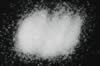

|
|
(For further information on spectroscopy, see:
http://speclab.cr.usgs.gov)
TITLE: Microcline HS103 Feldspar DESCRIPT
DOCUMENTATION_FORMAT: MINERAL
SAMPLE_ID: HS103
MINERAL_TYPE: Tectosilicate
MINERAL: Microcline (Feldspar group)
FORMULA: KAlSi3O8
FORMULA_HTML: KAlSi3O8
COLLECTION_LOCALITY: Crystal Peak, Colorado
ORIGINAL_DONOR: Hunt and Salisbury Collection
CURRENT_SAMPLE_LOCATION: USGS Denver Spectroscopy Laboratory
ULTIMATE_SAMPLE_LOCATION: USGS Denver Spectroscopy Laboratory
SAMPLE_DESCRIPTION:
Dimorphous with Orthoclase.
"This spectrum (103B) displays as its major feature a broad band near 1.3µ similar to the ferrous ion band in the two anorthite's above. This sample is quite pure in hand specimen, but Deer and others (1963) note that alkali feldspars are a series varying from pure KAlSi3O8 (microcline) to pure NaAlSi3O8 (albite) but they normally also contain a small amount of CaAl2-Si2O8 (anorthite). It appears that the anorthite fraction of this microcline contains substituted ferrous iron as in the anorthite's above, which also accounts for the bands in the visible at 0.38 and 0.42µ. Weak bands at 1.9 and 2.5µ are due to included water, while the 2.2µ band is due to the combination involving the AlOH bend."
Sieve interval 74 - 250µm.
Hunt, G.R., J.W. Salisbury, and C.J. Lenhoff, 1973, Visible and near-infrared spectra of minerals and rocks: VI. Additional silicates. Modern Geology, v. 4, p. 85-106.
IMAGE_OF_SAMPLE:

END_SAMPLE_DESCRIPTION.
XRD_ANALYSIS:
Max. microcline + albite(L) + quartz(m)
END_XRD_ANALYSIS.
COMPOSITIONAL_ANALYSIS_TYPE: None # XRF, EM(WDS), ICP(Trace), WChem
COMPOSITION_TRACE: None
COMPOSITION_DISCUSSION:
None
END_COMPOSITION_DISCUSSION.
MICROSCOPIC_EXAMINATION:
Not done yet
END_MICROSCOPIC_EXAMINATION.
SPECTROSCOPIC_DISCUSSION:
END_SPECTROSCOPIC_DISCUSSION.
SPECTRAL_PURITY: 1c2c3c4_ # 1= 0.2-3, 2= 1.5-6, 3= 6-25, 4= 20-150 microns
| LIB_SPECTRA_HED: | where | Wave Range | Av_Rs_Pwr | Comment |
|---|---|---|---|---|
| LIB_SPECTRA: | splib04a r 2990 | 0.2-3.0µm | 200 | g.s.= |
| LIB_SPECTRA: | splib05a r 4354 | 0.2-3.0µm | 200 | g.s.= |
| LIB_SPECTRA: | splib06a r 13639 | g.s.= | ||
| LIB_SPECTRA: | splib06a r 13651 | g.s.= |
{kind=link}